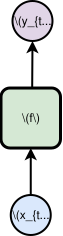
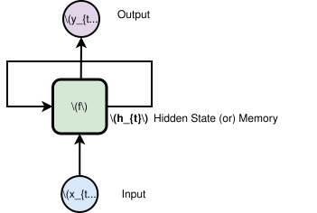
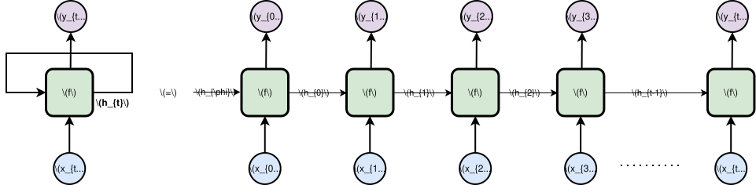
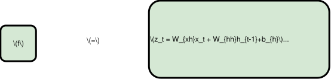

Recurrent Neural Networks
There’s something fascinating about watching a machine write emails, generate images, compose music, produce videos, and even build software. Every time I see this, I can’t help but wonder how this is even possible. That question is exactly what leads us to some of the greatest inventions in Artificial Intelligence that made this phenomenal feat possible.
In this post, we’ll learn one of those earliest inventions in modeling sequence data.
What is Sequence Data?
So before seeing the formal definition of sequence data, let’s see a few examples of sequence data. 1. A song (audio) 2. A movie (video) 3. A chapter in a book (text)
- Take a song. Rearrange its chorus and drop it in the middle. It just doesn’t sound right.
- Take a chapter. Shuffle the paragraphs around. It just doesn’t read right.
- Take a video. Shuffle the frames around. It just doesn’t look right.
If you observe all these examples, the order (or sequence) matters in sequence data. In addition to that, this data is of variable length. A song can be 5 minutes or 20 minutes long. A video can be 5 minutes or 500 minutes long. A text can be 100 words or 1000 words long. Having seen these two properties of sequence data, let’s go through the formal definition of sequence data.
Vanilla NN & Its Fixed API
A traditional neural network takes fixed input and produces fixed output. Let’s say it was trained to take an image of a specific size and classify it as a dog or a cat. So the network can only handle images of the same size and same possibilities.
Why is this a problem for sequence data?
So we have seen in the previous section that sequence data has two key properties: one is order and the other is variable length. So a traditional neural network cannot handle variable length inputs & outputs. Unfortunately, many real world problems fall into this category. Take translation or text summarization, for instance - both require handling inputs and outputs of variable length.

Figure: Vanilla Neural Network with fixed input and outputIntroducing Feedback Loops
A vanilla NN processes input and produces output - and then it’s done. It has no memory of what it just processed. We need a network that can remember. But how can a network even remember? That’s what a feedback loop does.
A feedback loop is the recurrent connection between one step and the next. At each step, the RNN cell takes two inputs: the current input and the memory from the previous step (which is empty at the very first step). Then, it updates the memory and returns it to the next step. The next step receives this memory and the current input to produce another prediction and update the memory. This loop continues till the entire input sequence is done.
In the RNN literature, memory is referred to as hidden state because it’s “internal” (invisible) and captures the network’s current “status”. For the rest of this post, we’ll use the term hidden state instead of memory.

Figure: RNN Cell with feedback loopUnrolled RNN
The feedback loop may be intimidating when you see it for the first time. You may think how the output of the same cell can feed back into itself. If we unroll the RNN cell into timesteps, things will start to make sense. It’s like a for loop with a global variable. At every iteration, we read the global variable and make predictions. At the end of each iteration, we also make changes to the global variable.

Figure: RNN Cell (unrolled)What’s Inside a Single Cell?
To make a prediction (\(y_t\)), each cell considers what it has seen so far (hidden state, \(h_{t-1}\)) and the current input \(x_t\). When I say consider, it should be mathematically translated to equations for computing them.

Figure: Inside RNN CellNow let’s understand these three equations.
- \(z_t = W_{xh}x_t + W_{hh}h_{t-1}+b_{h}\)
- This is a linear combination of the previous hidden state and the current input. This consolidates the past and the present.
- \(h_{t} = \tanh(z_t)\)
- \(\tanh\) is the activation function that introduces non-linearity and squashes the output to [-1, 1]. This keeps the hidden state values bounded, preventing them from exploding over many timesteps.
- \(y_{t} = W_{hy}h_{t} + b_{y}\)
- Now, \(h_t\) carries all the context about the past and the present. \(y_t\) is simply a linear projection of that into the output space. It just transforms the entire memory to output.